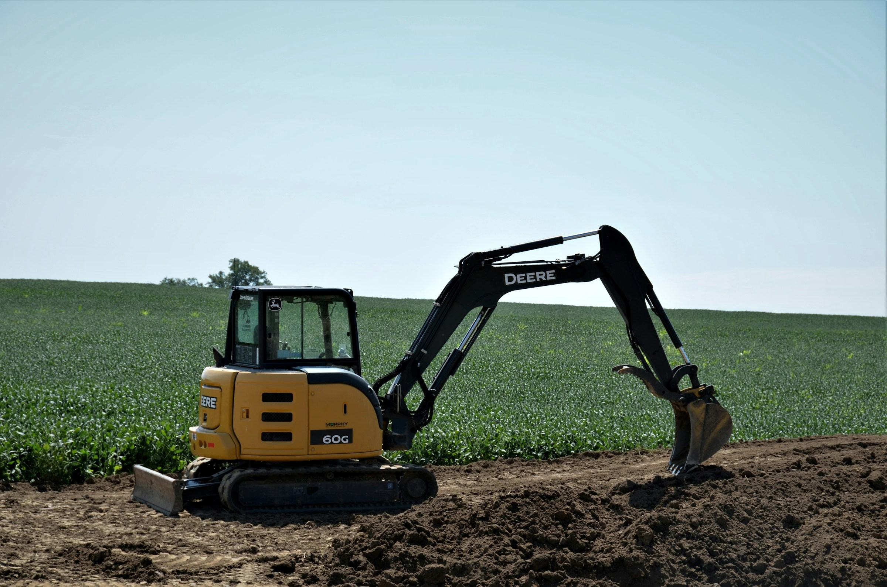
FENIMA s.r.o. · Prešov
Zemné práce minibagrom.
Výkopy základov, ryhy pre prípojky, terénne úpravy a príprava staveniska. Aj tam, kde je málo miesta, napríklad v záhrade alebo pri dome. Zeminu a materiál odvezieme aj privezieme.
O firme
Prvé, čo sa na stavbe robí.
Skôr než sa začne murovať, treba vykopať základy, prípojky a pripraviť terén. Práve tieto práce robíme. Výkop urobíme tam, kde ho potrebujete, a zeminu buď použijeme na zásyp, alebo ju odvezieme.
Minibager sa dostane aj na menší pozemok, do záhrady alebo k domu, kde by veľký stroj nadrobil viac škody ako osohu. Pôsobíme v Prešove a okolí.
- Sídlo
- Pavlovičovo námestie 12, 080 01 Prešov
- Konateľ
- Mgr. Mário Fedor
- Pôsobíme
- Prešov a okolie
- Zápis
- OR Okresného súdu Prešov, oddiel Sro, vložka 29633/P
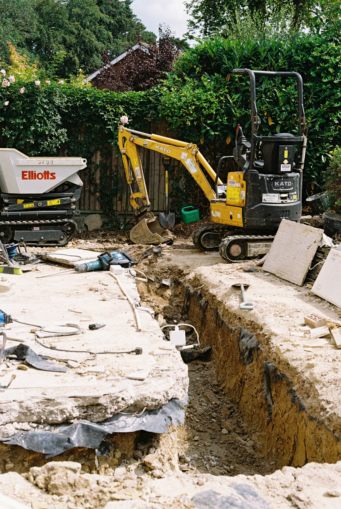
Ako kopeme
Od kolíka po rovný trávnik.
- Etapa 1 / 6
Obhliadka a vytýčenie
Najprv si pozemok prejdeme. Kolíkmi a šnúrou vyznačíme, kade pôjde výkop, a overíme, kade vedú existujúce siete.
Obhliadka
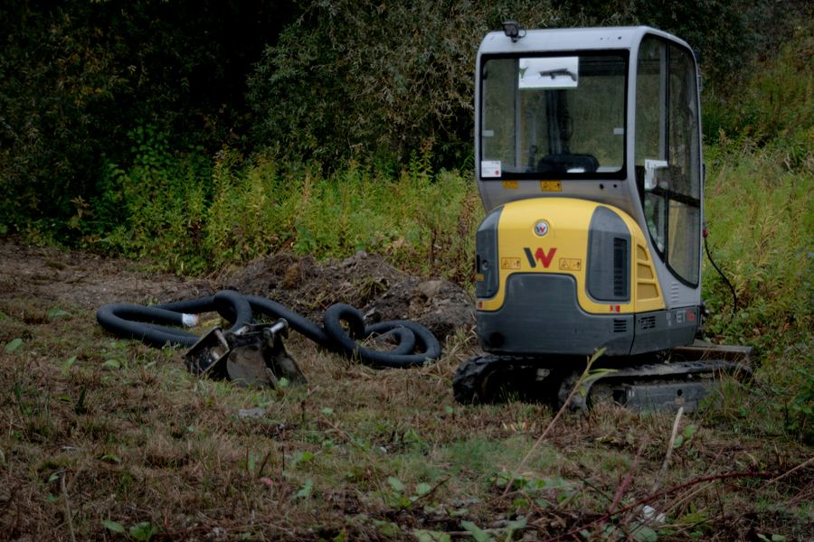
- Etapa 2 / 6
Výkop
Minibager vykope ryhu alebo jamu v potrebnej hĺbke a šírke. Zeminu odkladáme bokom, aby sa dala použiť na zásyp.
Výkopové práce
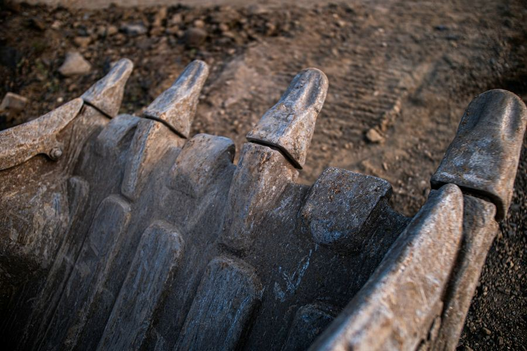
- Etapa 3 / 6
Uloženie
Do pripraveného výkopu prídu rúry, chráničky s káblami alebo základy, podľa toho, na čo výkop slúži.
Prípojky · základy
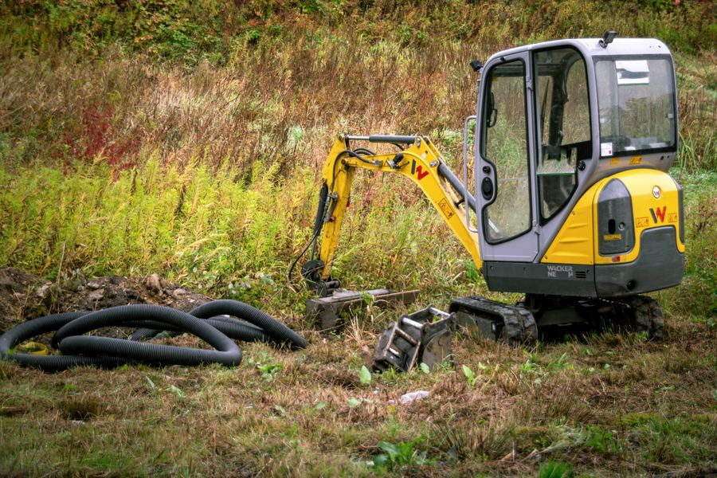
- Etapa 4 / 6
Zásyp a zhutnenie
Výkop po vrstvách zasypeme a zhutníme, aby terén neskôr nesadal.
Zásypy
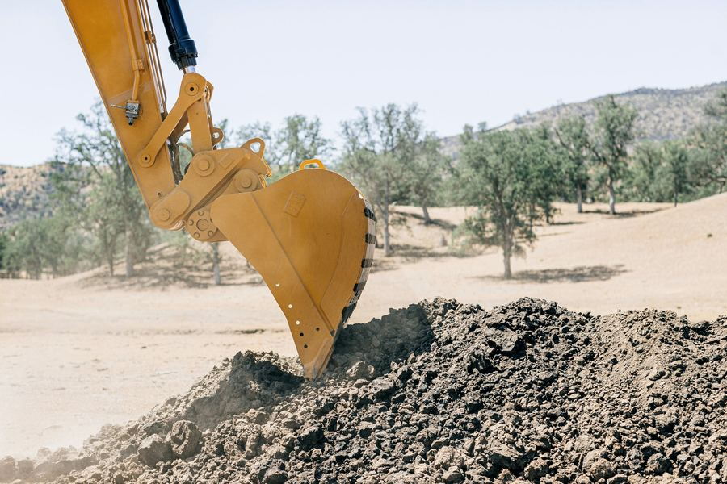
- Etapa 5 / 6
Úprava terénu
Povrch zarovnáme a upravíme. Pozemok vyzerá ako predtým, alebo lepšie.
Terénne úpravy
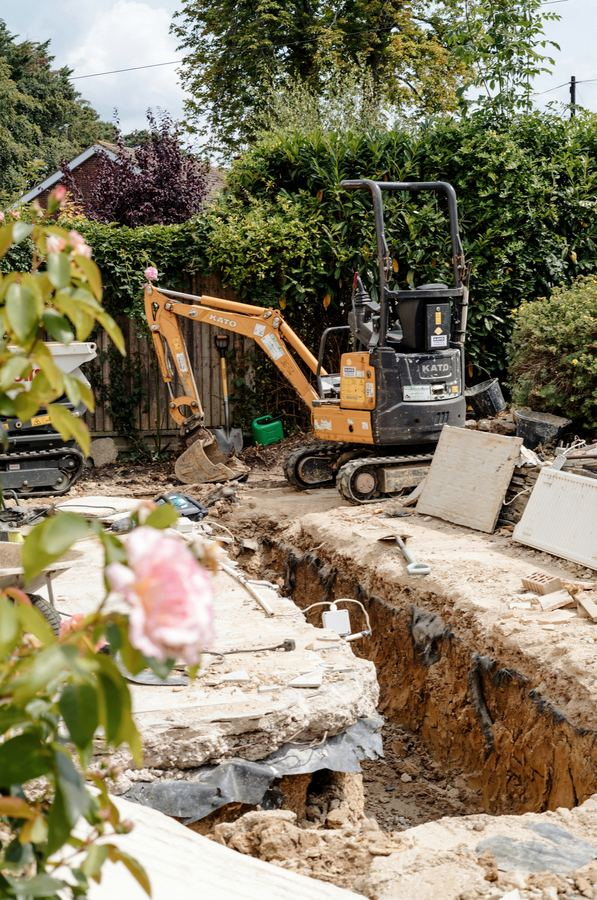
- Etapa 6 / 6
Odvoz zeminy
Čo sa do zásypu nezmestilo, naložíme a odvezieme. Po nás nezostane hromada hliny pri plote.
Doprava do 3,5 t
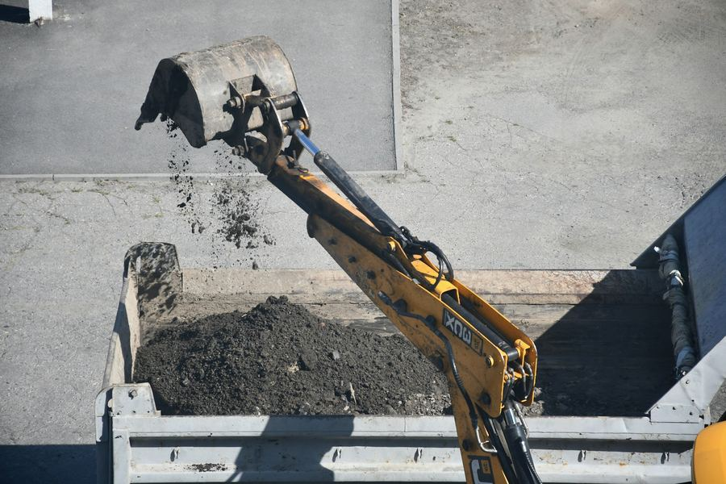
Čo robíme
Práce, ktoré u nás objednáte.
Vyberte, čo Vás čaká. V dopyte stačí pár viet, zvyšok si pozrieme priamo na pozemku.
- 01
Výkopy základov
Základové pásy a dosky pre rodinné domy, prístavby, garáže či oplotenie. Výkop podľa projektu alebo vytýčenia.
- rodinné domy
- prístavby
- oplotenie
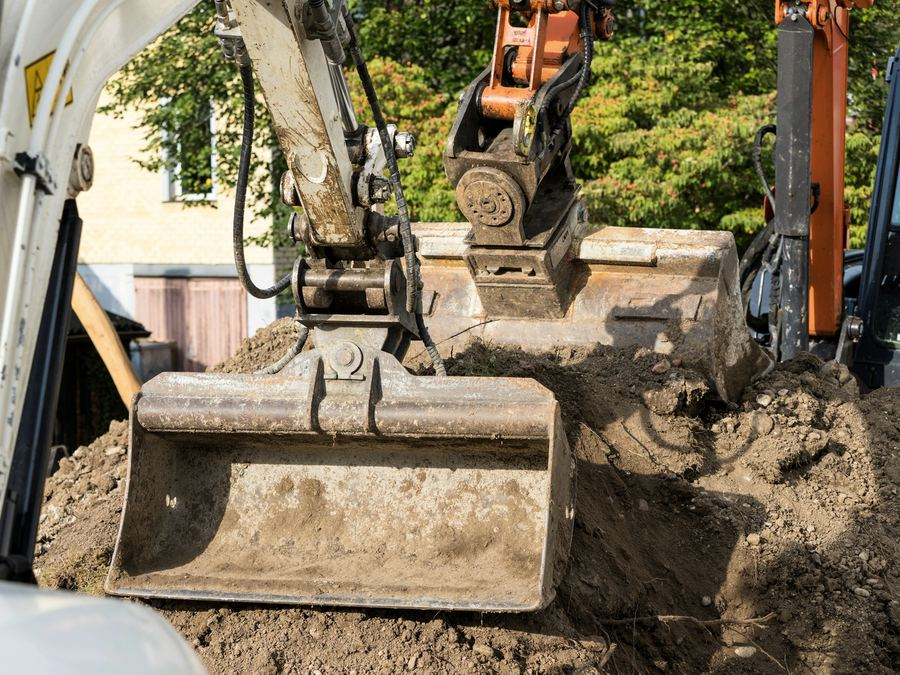
- 02
Ryhy pre prípojky
Voda, kanalizácia, elektrina, plyn. Ryhu vykopeme od ulice až k domu a po uložení ju zasypeme.
- voda
- kanalizácia
- elektrina
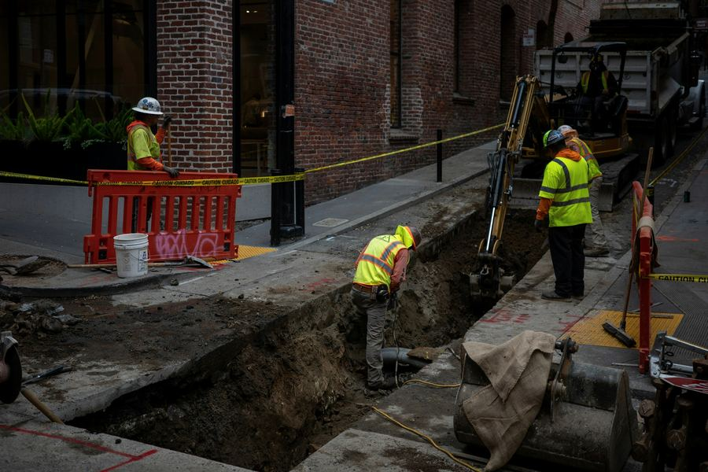
- 03
Terénne úpravy
Zarovnanie pozemku, svahovanie, príprava záhrady alebo plochy pod dlažbu a zámkovú dlažbu.
- zarovnanie
- svahy
- záhrada
- 04
Búracie a prípravné práce
Odstránenie starých betónov, základov či spevnených plôch a príprava staveniska, aby sa dalo začať stavať.
- búranie
- stavenisko
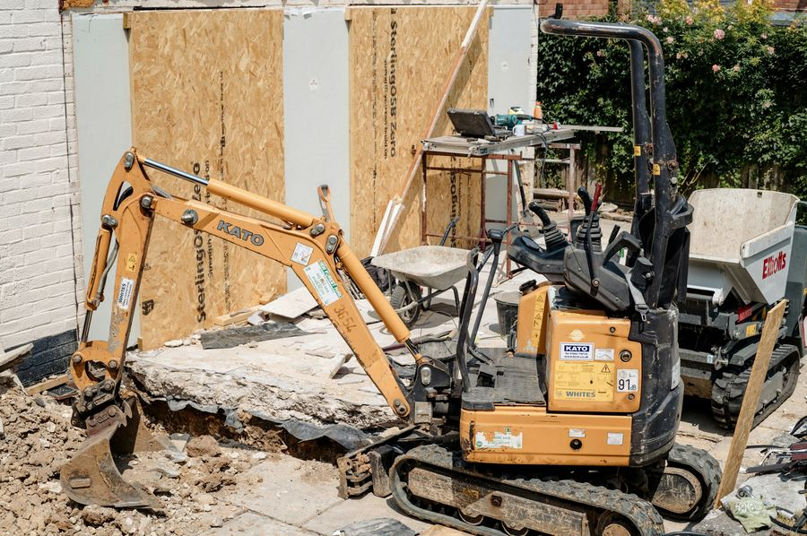
- 05
Odvoz a dovoz materiálu
Nákladná doprava vozidlom do 3,5 t. Odvezieme prebytočnú zeminu a privezieme štrk, piesok alebo iný materiál.
- do 3,5 t
- zemina
- štrk
- 06
Ďalšie stavebné práce
Keď sa po výkope pokračuje ďalej, vieme pomôcť aj so stavebnými a dokončovacími prácami. Dohodneme sa podľa rozsahu.
- stavebné práce
- dokončovacie práce
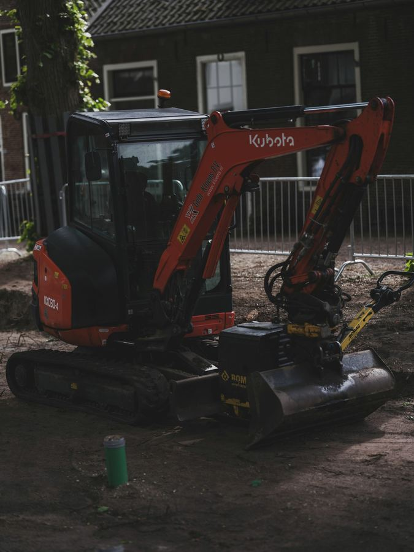

V teréne
Ilustračné fotky. Na hotovom webe tu budú Vaše zákazky a Vaša technika.
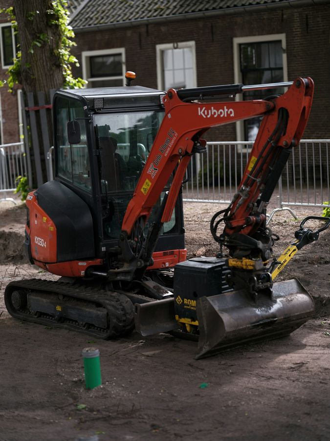
Spolupráca
Jasne dohodnuté vopred.
- 01
Dopyt
Napíšete, čo treba vykopať alebo upraviť. Stačí pár viet a fotka pozemku. Projekt alebo náčrt, ak ho máte, pokojne priložte.
- 02
Obhliadka
Pozrieme sa, kade sa stroj dostane na pozemok, kam pôjde zemina a čo všetko bude treba.
- 03
Cenová ponuka
Dostanete ponuku s rozpisom prác a termínom. Viete, za čo platíte a kedy prídeme.
- 04
Výkop a upratanie
Práce urobíme v dohodnutom rozsahu. Prebytočnú zeminu odvezieme a pozemok nenecháme rozbitý.
Dopyt
Čo treba vykopať?
Kliknite, o čo ide, a doplňte pár údajov. Ozveme sa Vám späť a dohodneme obhliadku.
Zákazkový list
- Práce
- zatiaľ nevybrané
- Miesto
- —
- Kedy
- —